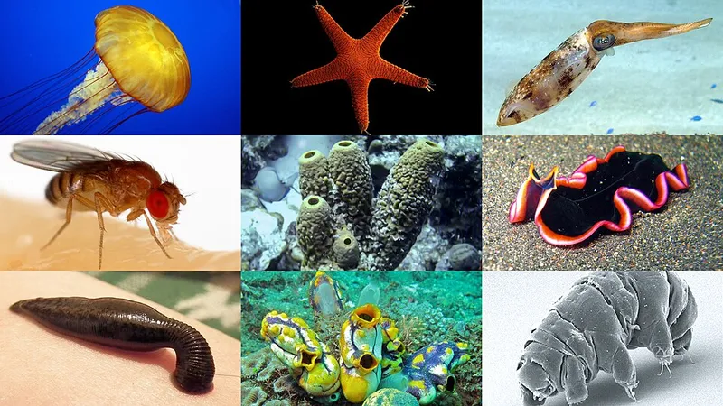
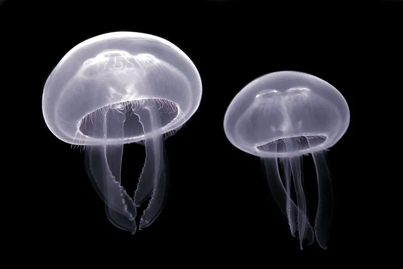
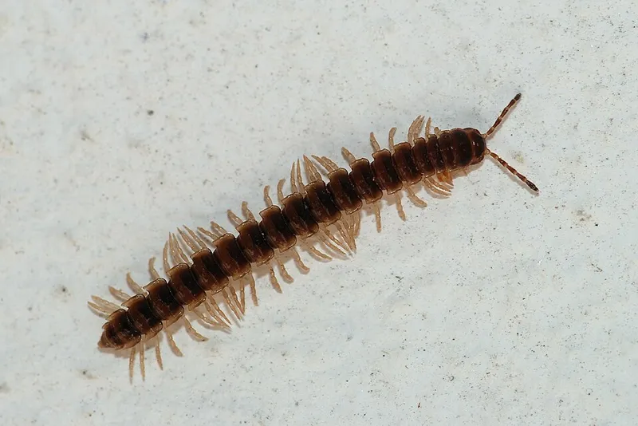
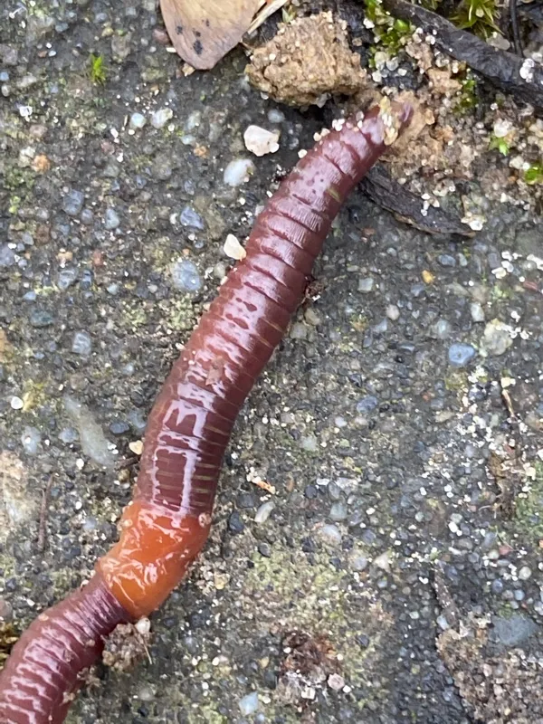

AN·i·mal


A multicellular eukaryote with no cell walls that eats other organisms for food.
动物：没有细胞壁、以其他生物为食的多细胞真核生物。
🧠 anima = breath, life.anima = 生命。
Quick check: Do animals have cell walls?
No.
Unit 7
The features that sort animals: symmetry, germ layers, body cavities, how the embryo develops, and skeletons.用来给动物分类的特征：对称性、胚层、体腔、胚胎发育方式和骨骼。
🎧 Listen to this unit听这个单元 12–20 min ⬇ Offline page离线页 All audio全部音频
From fertilized egg to blastula to gastrula: how germ layers and the first body openings set the body plan.从受精卵到囊胚、原肠胚：胚层和最早的开口怎样决定动物的体型。 YouTube
Radial and bilateral symmetry, cephalization, and the direction words anterior, posterior, dorsal and ventral.辐射对称与两侧对称、头化，以及前、后、背、腹这几个方位词。 YouTube
Animal development stage by stage, then how embryos with two or three germ layers get different body cavities.按阶段讲动物胚胎发育，再讲两个或三个胚层的动物怎样形成不同的体腔。 YouTube
Symmetry, germ layers, coelom and protostome vs deuterostome first, then a tour of nine animal phyla.先讲对称、胚层、体腔、原口与后口动物，再逐个游览九个动物门。 YouTube
The animal family tree: where protostomes and deuterostomes split and why 'phylum' is a messy category.动物的家谱：原口动物和后口动物在哪里分开，以及为什么“门”这个分类并不整齐。 YouTube
A teacher-style summary that sorts animals by symmetry, germ layers, body cavity and development, plus motile vs sessile.老师式的总结：按对称、胚层、体腔和发育方式给动物分类，还讲了能动与固着。 YouTube
Links open other websites. Videos load from YouTube only after you tap them (no cookies until then).链接会打开其他网站。视频点一下才会从 YouTube 加载（点之前不会有任何跟踪）。
A multicellular eukaryote with no cell walls that eats other organisms for food.
动物：没有细胞壁、以其他生物为食的多细胞真核生物。
🧠 anima = breath, life.anima = 生命。
No.

An animal with no backbone. Most animal species are invertebrates.
无脊椎动物：没有脊椎骨的动物，大多数动物种类都是无脊椎动物。
🧠 in- = not, vertebra = joint of the spine.in- = 无。
No. It is an invertebrate.

An animal with a backbone made of vertebrae.
脊椎动物：有由椎骨构成的脊柱的动物。
🧠 vertebra = bone of the spine.vertebra = 脊椎骨。
For example a fish and a bird.
Body parts arranged so that a cut can give matching halves.
对称性：身体各部分的排列使得切开后两半相同。
🧠 sym = together, metron = measure.sym = 一起，metron = 度量。
Body parts arranged so a cut gives matching halves.

No symmetry: the body cannot be cut into matching halves. Most sponges are asymmetrical.
不对称：没有对称性：身体无法切成相同的两半，多数海绵属于不对称。
🧠 a- = without.a- = 没有。
Most sponges.

Body parts arranged around a central point, so many cuts through the centre give matching halves.
辐射对称：身体各部分围绕中心排列，通过中心的多种切法都得到相同的两半。
🧠 radius = ray of a wheel.radius = 轮辐。
A jellyfish or a sea star.

A body that can be split into mirror-image left and right halves by one cut.
两侧对称：只有一种切法能把身体分成镜像的左右两半。
🧠 bi = two, latus = side.bi = 二，latus = 侧。
Bilateral.
The front, or head, end of an animal.
前端：动物的前方，即头端。
🧠 ante = before.ante = 之前。
The head end.
The back, or tail, end of an animal.
后端：动物的后方，即尾端。
🧠 post = after.post = 之后。
The tail end.
Relating to the back, or upper side, of an animal.
背侧的：与动物背部（上侧）有关的。
🧠 dorsal fin = the fin on a shark's back.dorsal fin 就是鲨鱼背上的鳍。
On the back.
Relating to the belly, or underside, of an animal.
腹侧的：与动物腹部（下侧）有关的。
🧠 venter = belly.venter = 腹部。
The belly side.
The gathering of sense organs and nerve cells at the head end.
头化：感觉器官和神经细胞集中在头端。
🧠 cephal = head.cephal = 头。
Bilateral symmetry.
One of the layers of cells in an early embryo that develop into the body's tissues.
胚层：早期胚胎中的细胞层，会发育成身体的各种组织。
🧠 germ = seed or beginning.germ = 萌芽。
Two or three.
The outer germ layer. It forms the skin and nervous system.
外胚层：最外层的胚层，形成皮肤和神经系统。
🧠 ecto = outside.ecto = 外。
Skin and the nervous system.
The middle germ layer. It forms muscles, bones and blood vessels.
中胚层：中间的胚层，形成肌肉、骨骼和血管。
🧠 meso = middle.meso = 中间。
Muscle, bone and blood vessels.
The inner germ layer. It forms the lining of the gut and many organs.
内胚层：最内层的胚层，形成消化道内壁和许多器官。
🧠 endo = inside.endo = 内。
The lining of the gut and organs such as the liver and lungs.
Having two germ layers (ectoderm and endoderm), as in jellyfish.
二胚层的：只有两个胚层（外胚层和内胚层），如水母。
🧠 diplo = two, blast = bud or germ.diplo = 二。
Two.
Having three germ layers (ectoderm, mesoderm and endoderm).
三胚层的：有三个胚层（外胚层、中胚层、内胚层）。
🧠 triplo = triple.triplo = 三。
Triploblastic.
A fluid-filled space between the gut and the body wall.
体腔：消化道与体壁之间充满液体的空间。
🧠 cavity = hollow.cavity = 空腔。
A fluid-filled space between the gut and the body wall.
An animal with no body cavity, such as a flatworm.
无体腔动物：没有体腔的动物，如扁形动物。
🧠 a- = without, coelom = cavity.a- = 没有。
No. It is an acoelomate.
An animal whose body cavity is only partly lined with mesoderm, such as a roundworm.
假体腔动物：体腔只有一部分被中胚层包裹的动物，如线虫。
🧠 pseudo = false. False cavity.pseudo = 假。
A roundworm (nematode).
An animal with a true coelom: a cavity completely lined with mesoderm.
真体腔动物：有真正体腔的动物：体腔四周完全被中胚层包裹。
🧠 coelom = Greek koiloma, a hollow.koiloma = 空腔。
Yes.
A true body cavity completely lined with tissue from the mesoderm.
体腔（真体腔）：内壁完全由中胚层组织包裹的真正体腔。
🧠 pronounced SEE-lom.读作 SEE-lom。
The mesoderm.

A body built from repeating sections, as in earthworms and insects.
分节：身体由重复的体节构成，如蚯蚓和昆虫。
🧠 segment = a cut piece.segment = 一段。
An earthworm or an insect.
An animal whose first opening in the embryo (the blastopore) becomes the mouth.
原口动物：胚胎的第一个开口（原口）发育成嘴的动物。
🧠 proto = first, stoma = mouth. First mouth.proto = 最先，stoma = 口。
The mouth.
An animal whose blastopore becomes the anus, and the mouth forms later.
后口动物：胚胎的原口发育成肛门、嘴在后来形成的动物。
🧠 deutero = second. Second mouth.deutero = 第二。
Deuterostomes.
An early embryo: a hollow ball of cells.
囊胚：早期胚胎：由细胞构成的空心球。
🧠 blast = bud or germ.blast = 芽。
A hollow ball of cells.
An embryo stage in which the ball folds in to make germ layers and a gut opening.
原肠胚：胚胎的一个阶段：球体向内凹陷形成胚层和原肠开口。
🧠 gastr = stomach.gastr = 胃。
The germ layers.

Staying attached in one place and not moving.
固着的：固定在一处、不能移动的。
🧠 sessile = sitting.sessile = 坐着的。
A sponge, or an adult coral.
Able to move from place to place.
能运动的：能够从一处移到另一处。
🧠 motion + -ile.motion 的形容词。
Motile.

A hard skeleton on the outside of the body, such as the shell of a crab or insect.
外骨骼：位于身体外部的坚硬骨架，如螃蟹和昆虫的外壳。
🧠 exo = outside.exo = 外。
An insect, a crab or a spider.
A skeleton inside the body, such as the bones of a vertebrate.
内骨骼：位于体内的骨架，如脊椎动物的骨骼。
🧠 endo = inside.endo = 内。
Yes.

A fluid-filled body compartment that muscles squeeze to move, as in an earthworm.
流体静力骨骼：充满液体的体腔，肌肉挤压它来产生运动，如蚯蚓。
🧠 hydro = water, static = standing.hydro = 水。
An earthworm.
A system where blood leaves the vessels and bathes the organs directly.
开管式循环系统：血液流出血管、直接浸润器官的循环系统。
🧠 open = not sealed.open = 不封闭。
Open.
A system where blood stays inside vessels all the time.
闭管式循环系统：血液始终在血管内流动的循环系统。
🧠 closed = sealed in vessels.closed = 封闭在血管里。
Closed.
1. Which is a characteristic of all animals?
C · Animals are multicellular and eat food; most lack a backbone.
2. About what share of animal species are invertebrates?
D · Most animal species have no backbone.
3. A jellyfish shows
B · Parts radiate around a centre.
4. Which symmetry goes with cephalization?
B · A head end appears with bilateral symmetry.
5. The ventral side of an animal is the
B · Ventral = belly.
6. Which germ layer forms the nervous system and skin?
C · Ecto = outside.
7. Which germ layer forms the lining of the gut?
C · Endo = inside.
8. A jellyfish has two germ layers. It is
B · Diploblastic means two layers.
9. A flatworm has no body cavity. It is a(n)
C · A- means without.
10. A true coelom is lined with
B · The mesoderm lines it completely.
11. In a deuterostome, the blastopore becomes the
B · Deutero = second mouth, so the first opening becomes the anus.
12. Which stage is a hollow ball of cells?
B · Blastula comes before gastrula.
13. A crab has a hard outer covering. It is an
B · Exo = outside.
14. An earthworm moves by squeezing fluid with muscles. This is a
A · The fluid acts as the skeleton.
15. Blood that stays in vessels at all times is part of a
A · Closed systems keep blood in vessels.
Match each term to its definition.
1→A, 2→E, 3→C, 4→D, 5→B
Match each term to its definition.
1→C, 2→D, 3→B, 4→E, 5→A
Match each term to its definition.
1→B, 2→C, 3→A, 4→E, 5→D
.jpg){kind=link}


_Luc_Viatour.jpg){kind=link}


_5.jpg){kind=link}